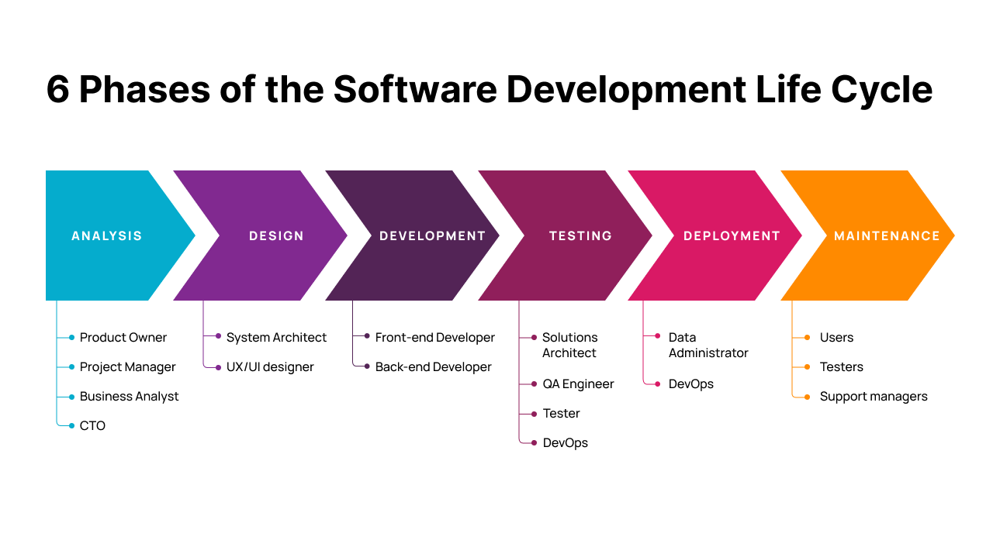

Scrum Cheatsheet
Scrum is a flexible way of building software in small, manageable steps. It encourages teamwork, communication, and adapting to changes along the way. Agile development is an approach that prioritizes customer satisfaction, collaboration, and continuous improvement. It involves delivering working software in short cycles, working closely with customers and being open to change throughout the process.
Agile Principles¶
- Customer Collaboration over Contract Negotiation.
- Working Software over Comprehensive Documentation.
- Responding to Change over Following a Plan.
- Individuals and Interactions over Processes and Tools.
- Embracing Change throughout the Project.
Scrum Framework¶
- Product Backlog: Prioritized list of user stories and features.
- Sprint Planning: Selecting items from the backlog for the upcoming sprint.
- Sprint: Fixed timebox (e.g., 1-4 weeks) for development work.
- Daily Stand-up: Daily 15-minute team meeting to synchronize and plan work.
- Sprint Review: Demo of completed work to stakeholders and gathering feedback.
- Sprint Retrospective: Reflection on the sprint and identification of improvement areas.
- Product Owner: Represents the stakeholders, prioritizes the backlog, and defines requirements.
- Scrum Master: Facilitates the Scrum process, removes obstacles, and coaches the team.
- Development Team: Cross-functional team responsible for delivering the product increment.
User Stories¶
- Concise, specific, and testable descriptions of desired functionality.
- Written from the perspective of end users or stakeholders.
- Follow the INVEST acronym: Independent, Negotiable, Valuable, Estimable, Small, and Testable.
- Example: "The user should login into the dashboard"
Sprint Planning Meeting¶
- Product Owner presents the highest-priority items from the backlog.
- Team discusses and estimates the effort required for each item.
- Team commits to a set of items to be completed in the upcoming sprint.
Daily Stand-up Meeting¶
- Team members provide updates on:
- What they did since the last stand-up.
- What they plan to do until the next stand-up.
- Any obstacles or challenges they're facing.
- A quick synchronization meeting, not for detailed discussions.
Sprint Review Meeting¶
- Team demonstrates completed work to stakeholders.
- Stakeholders provide feedback and ask questions.
- Product Owner updates the backlog based on feedback.
Sprint Retrospective Meeting¶
- Team reflects on the previous sprint.
- Discusses what went well, what could be improved, and potential action items.
- Aims to continuously improve the team's processes and practices.
Burndown Chart¶
- Visualizes the remaining work (usually in story points) over time.
- Helps track progress during a sprint and identify potential issues.
Product Increment¶
- A shippable and potentially releasable version of the product at the end of each sprint.
- Increment should provide value to stakeholders and be of high quality.
Kanban Board¶
- Visualizes work items and their flow across different stages (e.g., To Do, In Progress, Done).
- Facilitates transparency, collaboration, and tracking of work progress.
Definition of Done (DoD)¶
- A set of criteria that defines when a product backlog item is considered complete.
- Ensures a common understanding of what constitutes a finished work item.
Continuous Integration (CI)¶
- Frequently integrating code changes into a shared repository.
- Automated build and testing processes to detect issues early.
Retrospective Action Items¶
- Actionable items identified during retrospectives to improve team processes and practices.
- Assigned to team members and tracked for completion.
Backlog Refinement¶
- Regular activity to review, prioritize, and refine backlog items.
- Collaborative session involving the Product Owner and the Development Team.
Spike¶
- Timeboxed investigation to gain knowledge or explore solutions for a specific technical challenge or user story.
Velocity¶
- Measure of the amount of work a team can complete during a sprint.
- Helps in estimating future work and planning sprints.
Lifecycle¶
 Image from: https://brocoders.com/blog/agile-software-development-life-cycle/
Resources¶
- https://www.atlassian.com/agile/scrum